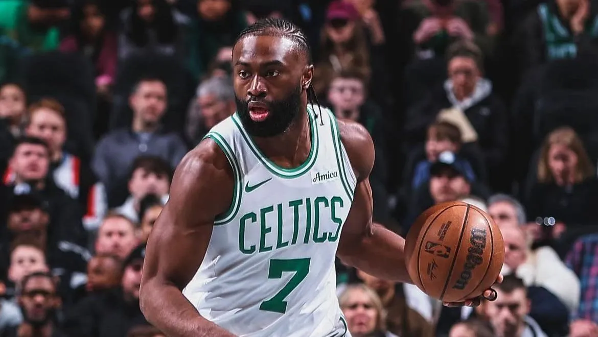

Jaylen Brown passa por cirurgia e deve estar pronto para pré-temporada

Ala dos Celtics teve menisco parcialmente rompido nos playoffs, mas recuperação segue dentro do previsto
O ala do Boston Celtics, Jaylen Brown, passou por uma cirurgia artroscópica no joelho direito na última
quarta-feira (11), segundo informou a franquia. A expectativa é que o jogador de 28 anos esteja
totalmente recuperado e sem limitações para participar do training camp da equipe, que antecede a
próxima temporada da NBA.
De acordo com a ESPN, Brown encerrou os playoffs com uma lesão no menisco, que estava parcialmente
rompido. Mesmo com o problema físico, o jogador teve média de 22,1 pontos e 7,1 rebotes por partida na
pós-temporada.
O Boston Celtics foi eliminado nas semifinais da Conferência Leste pelo New York Knicks, após perder
Jayson Tatum, estrela do time, por conta de uma ruptura no tendão de Aquiles.
Brown, que já foi selecionado quatro vezes para o All-Star Game e eleito MVP das Finais da NBA, em 2025
teve médias de 22,2 pontos, 5,8 rebotes e 4,5 assistências – a melhor marca da carreira – em 63 jogos
nesta temporada regular, todos como titular.
Desde que foi escolhido na terceira posição do Draft de 2016 pelos Celtics, o ala acumula médias de 19,0
pontos, 5,3 rebotes e 2,6 assistências em 603 partidas disputadas, sendo titular em 496 delas.